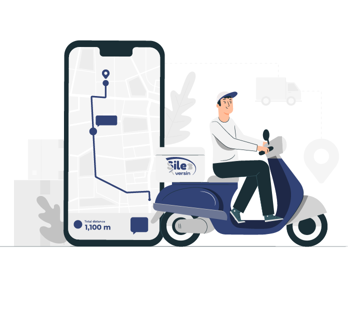

Kuru Temizleme mükemmel bir çözüm
Doğa ve cep dostu, klasik temizleme yöntemleri gibi doğaya zarar verilmez



Doğa ve cep dostu, klasik temizleme yöntemleri gibi doğaya zarar verilmez

"Sileversin" tüketici gözü ile tasarlanmış, birinci önceliği yüzde yüz tüketici memnuniyeti olan, Türkiye'nin lider araç kuru temizleme.
Sileversin Ekibi olarak, teoride sıradan gözüken ama pratikte hiç kolay olmayan oto yıkama konusuna bir çözüm getiriyor ve hayatını kolaylaştıracak yepyeni bir uygulamayı beğenine sunuyoruz. En yüksek teknolojiyle, en hızlı en çevreci araç temizliği, hem de aracını neredeyse orada parlatıyoruz. telefon uygulamalarımız üzerinden zamanını seç, bır tıkta ordayız. Yıkatmadan yıkatmanın keyfini sen de yaşa.
Temizleme yöntemlerinde su kullanılmaz ancak kir çözücüsü ile deterjan karaştırılır.
Uygulamanın ana sayfasından arabanızının konumunu belirleyiniz.
İstediğiniz hizmet türünü seçiniz.
Randevu listesinden size uygun randevu seçiniz.
Hizmet ücretini güvenli bir şekilde ödeme yapabilirsiniz ve iptal etme hakkınız mevcuttur.
Şu ana kadar, 10.000'den fazla müşteriye hizmet verdik ve müşteri memnuniyeti mükemmeldir
Hizmetlerimiz hafta boyunca, günlük 15 saati mevcuttur
Güvenilir ve organik malzemeler kullanmaktayız
Hizmetin 45 dakikayı aşmayan bir süre içinde uygulanması
hizmetlerimizden 100% memnun kalacaksınız.
1500 müşteriye anket verdik.

Hizmeti denemek için çoğu heyecanla bekliyormuş.
Kuru temizlemeye denemek için müşterilerin %70i beklemekte.
Yüzde 92'si su tüketiminden tasarruf edilmesini hoşa karşılıyor
%62'si boş zamanı olmadığı için ve yeni çözümleri hoşa karşıladı
Bir paket satın aldığınızda yüzde 30'dan fazla tasarruf edebilirsiniz.